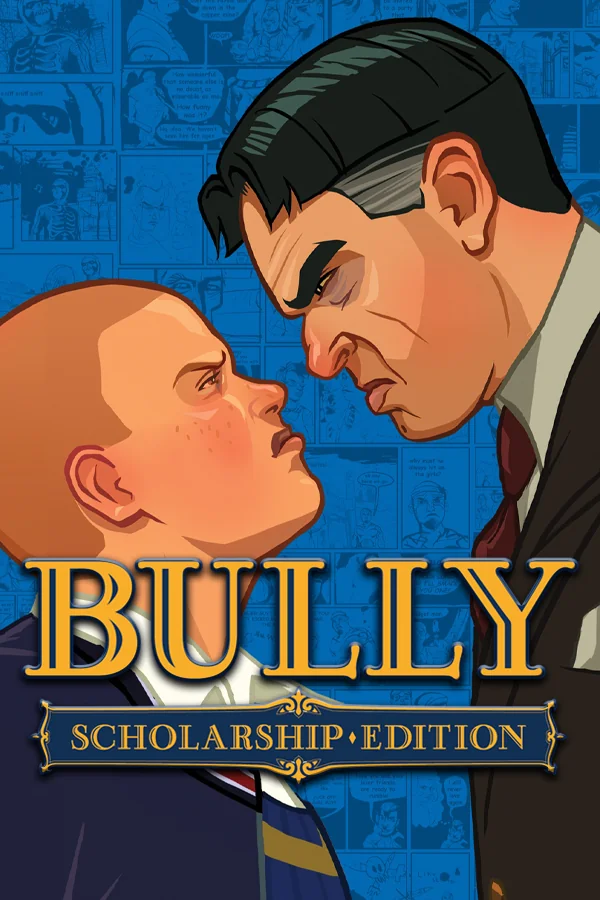
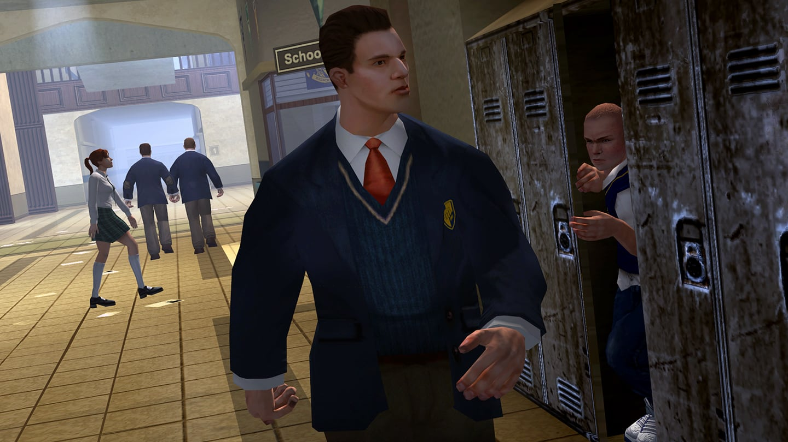
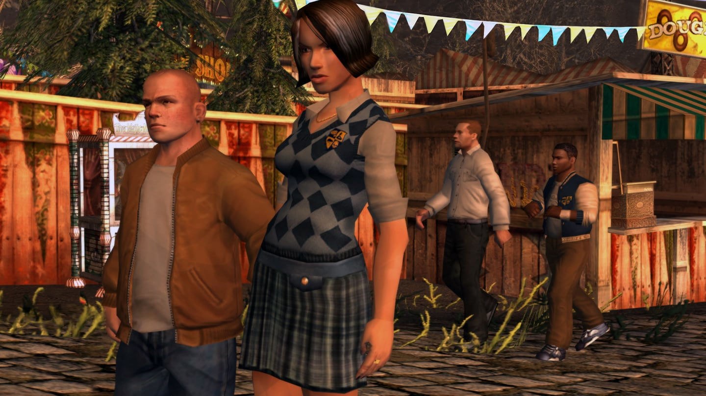
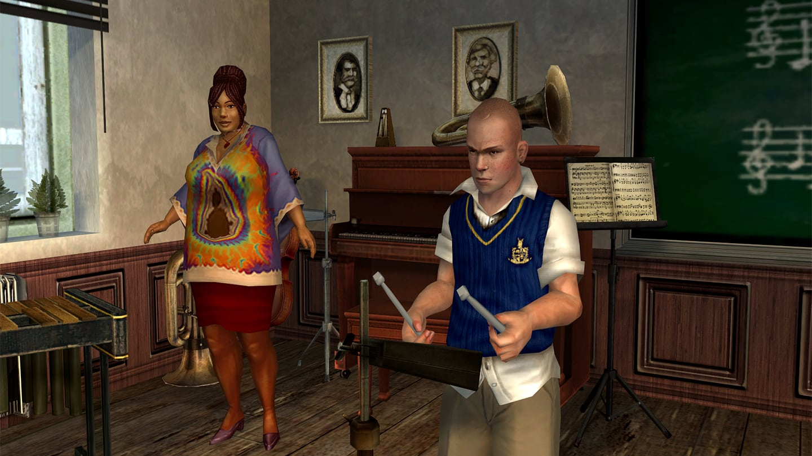
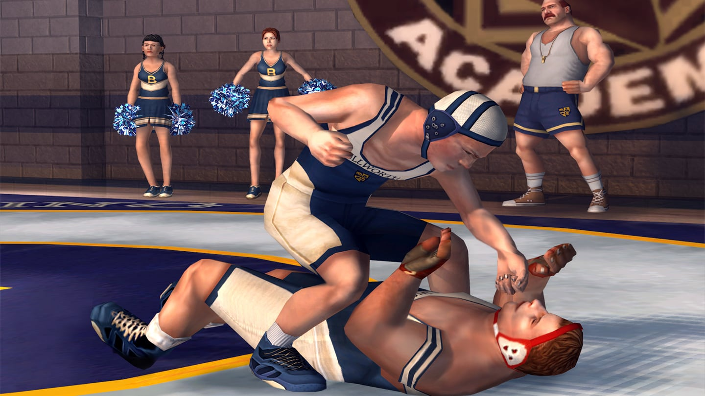

Bully

Descripción
Aduéñate de los pasillos de la Academia Bullworth con Jimmy Hopkins, un travieso adolescente que tendrá que enfrentarse a los obstáculos de un colegio privado decadente en el que los embusteros, los tramposos y los pijos son los miembros más populares de la comunidad estudiantil. Enfréntate a los abusones, sé más listo que los profesores, gasta bromas y participa en algunas de las actividades extraescolares que se celebran fuera del campus, en la ciudad de Bullworth y alrededores mientras aprendes a sobrevivir al año académico... y a dominar el lugar.
Capturas del videojuego




Información del videojuego
| Desarrollador | Plataforma | Fecha de lanzamiento | Edición ampliada |
|---|---|---|---|
| Rockstar Vancouver | PS2, PS3, PS4, PS5, Xbox, Wii, PC, Android e iOS | 17 de octubre de 2006 | Bully: Scholarship Edition (2008) |
Mi opinión personal
Se viene juegazo.. La verdad es que Bully es un auténtico juegazo y ojalá algún día salga una segunda parte.
Hay personas que dicen que sería imposible debido a lo delicado que es el tema del acoso escolar, pero, si os paráis a mirar la historia de Bully, os daréis cuenta de que es prácticamente todo lo contrario. Jimmy ayuda a los alumnos que sufren acoso y tiene que enfrentarse precisamente a quienes se dedican a hacer bullying.
Es verdad que, si dejamos de lado la historia principal, podemos hacer prácticamente lo que queramos e incluso atacar a otros alumnos, pero es que de eso también trata la libertad que ofrece un videojuego.
Personalmente, creo que una secuela podría ser un auténtico éxito. Además, no podemos olvidarnos de su increíble banda sonora, que acompaña perfectamente a la ambientación del juego.